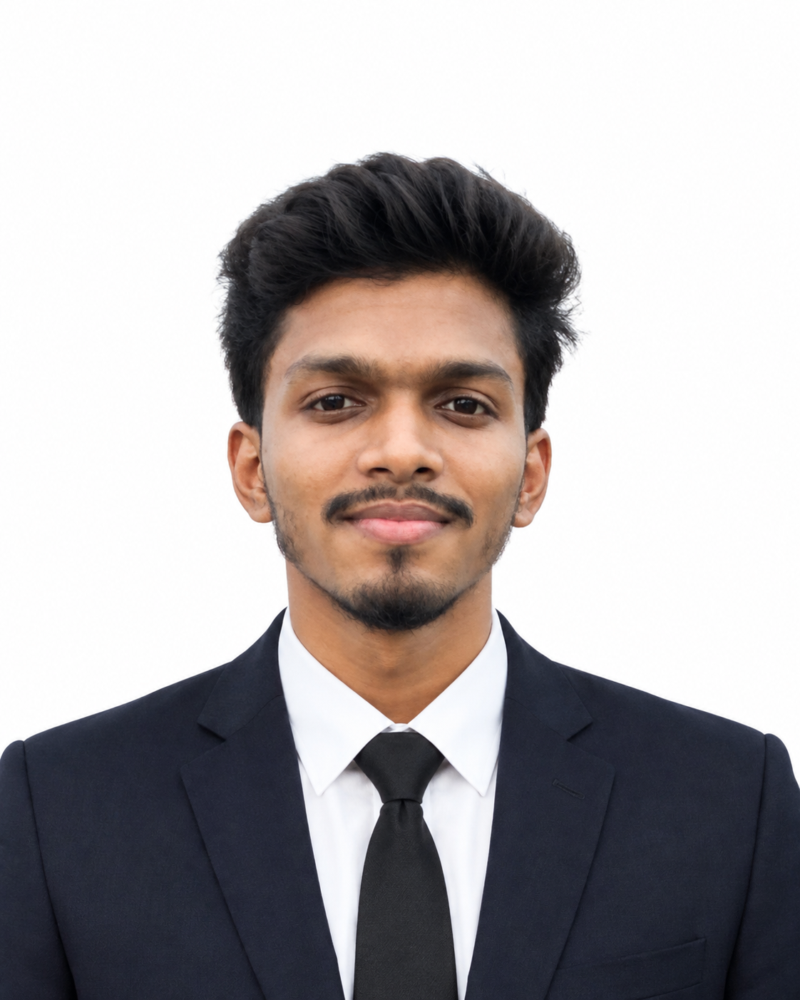

Software Development
Building maintainable applications with modern web technologies, databases, and secure role-based workflows.
Hi, I'm
Final-semester Computer Science & Engineering student in Dhaka, Bangladesh, focused on software development, Data Science, Data Mining, Machine Learning, and Human-Computer Interaction.

I enjoy turning ideas into practical systems, learning through projects, and exploring research problems where software, data, and intelligent systems meet.
Building maintainable applications with modern web technologies, databases, and secure role-based workflows.
Interested in extracting useful patterns from data and applying analytical methods to real-world problems.
Exploring practical ML, explainable approaches, prediction, clustering, and research-driven problem solving.
Interested in creating useful, understandable, and user-centered digital experiences.
The academic path and project-focused direction shaping my engineering mindset.
Expected graduation: December 2026. Academic focus includes Data Science, Data Mining, Machine Learning, HCI, and MIS.
Research work spanning spatial demand prediction, critical-mineral supply-chain resilience, and tangible smart-system interaction.
Built a role-based hospital management system and an interactive 2D graphics project.
A selection of academic and practical software projects.
Role-based healthcare management system for patients, doctors, appointments, billing, and laboratory records.
Interactive 2D graphics and animation project with keyboard/mouse interaction and day/night scene switching.
Languages, frameworks, databases, and developer tools I use to build software.
Research-oriented work connecting machine learning, spatial analysis, resilience, and smart interaction.
A spatial machine-learning framework for station-level bike-sharing demand prediction using K-Means clustering and cohort-based analysis.
An explainable ML framework to analyze critical-mineral supply-chain risk and resilience under geopolitical disruptions.
A smart hydration reminder system that automatically tracks water consumption using weight-based sensing.
I believe good engineering combines clean implementation, practical problem solving, and a willingness to keep learning.
Open to internships, software opportunities, research collaboration, and meaningful projects.
I'd be happy to connect and discuss software development, research, or collaboration.
Send Email ↗